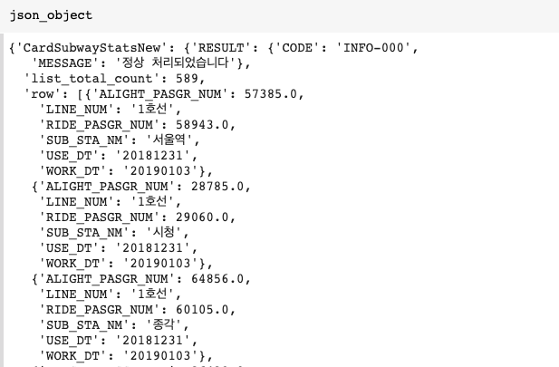
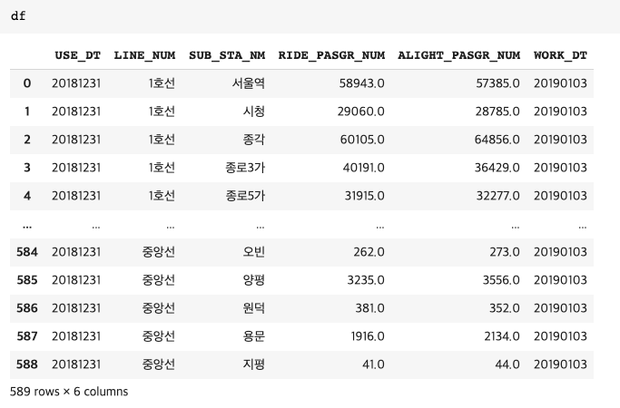
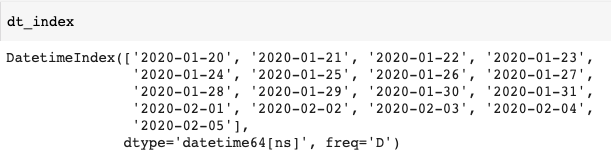
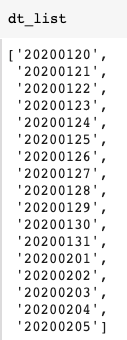
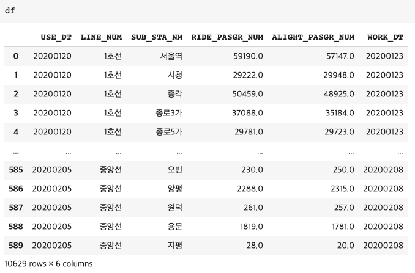
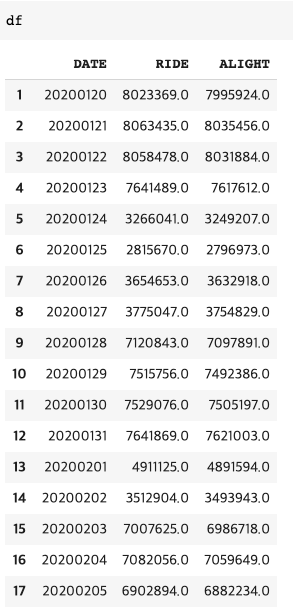
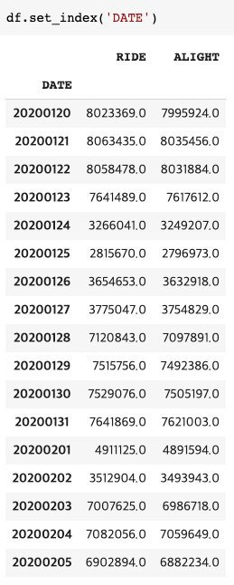
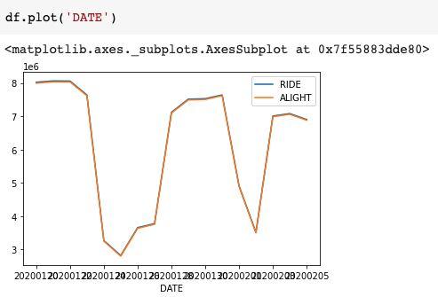
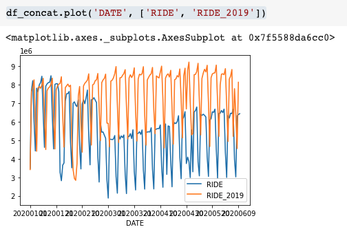

[파이썬] 서울 공공데이터 포털 Open API를 이용해서 지하철 승차인원수 구하기
Open API로 불러온 데이터를 Pandas로 다루기

공공데이터 포털를 활용할 일들이 많아지고 있다. 몇해 전부터 정부와 지자체에서 열심히 데이터를 공개해주고 있어서 이를 쏠쏠하게 활용해볼 수 있다. 오픈API로 데이터를 불러서 데이터프레임에만 데이터를 잘 쌓아놓으면 이래저래 활용하기가 매우 쉬워진다.
오늘은 서울시 공공데이터 포털인 ‘서울 열린데이터 광장’에서 지하철 승하차 인원 정보를 불러와서 코로나 이후 지하철 이용이 어떻게 변했는지 알아보자.
참고로 공공데이터포털에는 한국정보화진흥원에서 운영하는 정부 공식 ‘공공데이터포털’도 있고, 통계청에서 운영하는 Kosis 공유서비스, 한국은행 Ecos 등등 엄청 많다.
전체 흐름은 다음과 같다.
- 회원가입 및 일반인증키 신청
- 오픈API로 데이터 불러오기
- 불러온 데이터를 데이터프레임에 저장하기
- for 루프문으로 원하는 기간의 데이터를 데이터프레임에 저장하기
- 필요한 값의 시계열만 데이터프레임에 저장하기
- 저장한 데이터를 시각화하기
회원가입 및 일반인증키 신청
일단 서울 열린데이터 광장에서 회원가입 후에 오픈API를 이용할 수 있는 인증키를 발급받자. 회원가입-일반인증키 신청의 2단계만 거치면 완료된다.
- 서울 열린데이터 광장 : https://data.seoul.go.kr/
오픈API로 데이터 불러오기
[참고] Colab(코랩) 파이썬 코드 예제 바로가기 :
오픈API로 데이터를 불러오기 위해서 사용할 라이브러리를 불러온다.
import urllib.request
import json
import pandas as pd
from pandas.io.json import json_normalize
이어서 오픈API url로 데이터를 불러온다. ‘서울 지하철호선별 역별 승하차 인원 정보’에 가면 샘플 url이 있는데, 이를 이용해서 원하는 날짜의 데이터를 불러올 수 있다.
기본 형태는 아래와 같다.
http://openapi.seoul.go.kr:8088/(인증키)/json/CardSubwayStatsNew/1/1000/20200601
인증키에 앞서 받아온 인증키를 넣으면 된다. 인증키를 감싸고 있는 () 괄호는 빼야한다.
인증키가 123yourkeyhere라고하면, url은 아래와 같다.
http://openapi.seoul.go.kr:8088/123yourkeyhere/
인증키 다음에는 받아올 데이터의 형태를 지정하는 것인데, xml, xls, json 중에서 결정할 수 있는데,
여기서는 json을 사용하였다.
http://openapi.seoul.go.kr:8088/123yourkeyhere/json/
json 다음에 있는 것이 불러올 데이터의 테이블명이다. 지하철 승하차 인원 테이블은 'CardSubwayStatsNew'이다.
http://openapi.seoul.go.kr:8088/123yourkeyhere/json/CardSubwayStatsNew/
테이블명 다음의 숫자 1과 숫자 1000은 한번에 불러올 데이터 행의 시작과 끝번호이다.
서울시 지하철 모든 노선의 역(서울시 소재, 2020년 6월 현재 기준)의 갯수가
589개니까 1과 1000으로 지정하면 무방하다.
(참고로 서울시 열린데이터 광장의 오픈 API로 한번에 부를 수 있는 행의 수는 1000개다.
가령, 1행에서 3000행을 한번에 부르게 된다면 에러난다.)
http://openapi.seoul.go.kr:8088/123yourkeyhere/json/CardSubwayStatsNew/1/1000/
숫자 1과 숫자 1000 다음에 나오는 날짜는 데이터를 불러올 날짜다. YYYYMMDD 형태로 불러올 수 있다.
2020년 6월 1일의 서울시 전체 지하철역 승하차 인원을 불러오기 위해서는 아래 url을 입력하면 된다.
(인증키는 본인의 인증키를 입력해야 한다.)
최종 완성본 url:
http://openapi.seoul.go.kr:8088/123yourkeyhere/json/CardSubwayStatsNew/1/1000/20200601
불러온 데이터를 데이터프레임에 저장하기
최종 완성된 url을 가지고 데이터를 불러와서 이를 다루기 쉽도록 데이터프레임에 저장해 보자. 데이터프레임을 위해서 판다스(pandas) 라이브러리는 맨 앞에서 불러왔었다.
# url 변수에 최종 완성본 url을 넣자
url = "http://openapi.seoul.go.kr:8088/123yourkeyhere/json/CardSubwayStatsNew/1/1000/20200601"
# url을 불러오고 이것을 인코딩을 utf-8로 전환하여 결과를 받자.
response = urllib.request.urlopen(url)
json_str = response.read().decode("utf-8")
# 받은 데이터가 문자열이라서 이를 json으로 변환한다.
json_object = json.loads(json_str)
이제 json 형태로 받아진 데이터를 판다스에 저장하자. 먼저, json_object를 실행해 보면, 아래와 같이 나타난다.

위의 데이터에서 필요한 데이터는 ‘CardSubwayStatsNew'의 하위에 있는 ‘row'에 있음을 확인할 수 있다. 이제 row에 해당하는 데이터를 데이터프레임으로 불러와 보자.
# ['CardSubwayStatsNew']['row']를 데이터프레임 df로 불러오는 것은 아래와 같다.
df=pd.json_normalize(json_object['CardSubwayStatsNew']['row'])
df를 부르면 아래와 같이 저장된 것을 볼 수 있다.

여기까지 한것을 한번 모아서 보자. 총 5줄이다.
url = "http://openapi.seoul.go.kr:8088/123yourkeyhere/json/CardSubwayStatsNew/1/1000/20200601"
response = urllib.request.urlopen(url)
json_str = response.read().decode("utf-8")
json_object = json.loads(json_str)
df=pd.json_normalize(json_object['CardSubwayStatsNew']['row'])
for 루프문으로 원하는 기간의 데이터를 데이터프레임에 저장하기
지하철 이용객의 변화를 보기 위해서는 시계열을 살펴봐야 한다. 위에서 하루치 데이터를 데이터프레임으로 불러왔는데, 이것을 원하는 기간에 저장하도록 만들어 보자.
먼저, 원하는 기간의 날짜를 리스트에 넣어야 한다. 판다스를 이용해서 간단하게 할 수 있다.
# 2020년 1월 20일부터 2020년 2월 5일까지 데이터를 불러온다고 하자.
dt_index = pd.date_range(start='20200120', end='20200205')
dt_index는 아래와 같다.

이것을 리스트로 변환하자.
dt_list = dt_index.strftime("%Y%m%d").tolist()
결과는 아래와 같다.

이제 for 문을 날짜 리스트에 따라 돌려가며 부르면 된다.
dt_index = pd.date_range(start='20200120', end='20200205')
dt_list = dt_index.strftime("%Y%m%d").tolist()
# for 문으로 하루치 데이터 부르는 작업을 리스트에 저장된 기간에 반복한다.
# url을 바꿔가면서 데이터를 부르기 위해서 url의 끝부문 날짜에 변수 i를 넣어준다.
# 불러온 데이터를 append 메소드를 이용하여 데이터프레임 하단에 붙인다.
for i in dt_list:
url="http://openapi.seoul.go.kr:8088/123yourkeyhere/json/CardSubwayStatsNew/1/1000/" + i
response = urllib.request.urlopen(url)
json_str = response.read().decode("utf-8")
json_object = json.loads(json_str)
df_temp=pd.json_normalize(json_object['CardSubwayStatsNew']['row'])
df=df.append(df_temp)
[주의] for 문을 돌리기 전에 데이터를 불여넣을 데이터프레임 df를 하나 만들어 두자. 하루치 데이터를 불러온 작업을 for 문 돌리기 전에 한번 실행해 놓으면 된다. 또는 생성되는 칼럼에 맞게 하나 만들면 된다. 데이터프레임 만드는 것은 아래 섹션에 추가하였다. 이것을 안하면 df가 없다고 에러가 뜬다.
이제 2020년 1월 20일부터 2020년 2월 5일까지 서울 지하철 이용객 수를 확인해 보자.

데이터가 잘 불러져서 데이터프레임에 차곡차곡 쌓여있는걸 볼 수 있다.
필요한 값의 시계열만 데이터프레임에 저장하기
하루치 데이터만 해도 500행이 넘어가니 1월 20일~2월 5일 데이터만 불러도 시간이 조금 소요된다. 그래서 위 루프문 돌릴때 필요한 노선이나 역을 기준으로 데이터를 뽑아서 저장할 수도 있고, 하루 전체 승하차 인원 합을 구해서 저장해도 된다.
애초에 필요한 것이 노선과 역에 관계없이 서울시 지하철 하루 이용객수 추이다. 데이터프레임에 저장할 때, 하루치 인원 합을 구해서 저장해 보자.
# 일간 서울시 지하철 전체 승차, 하차 인원의 합을 구하는 명령어는 다음과 같다.
df_temp['RIDE_PASGR_NUM'].sum()
df_temp['ALIGHT_PASGR_NUM'].sum()
# 이것을 df.loc[j]를 이용해서 df라는 데이터프레임에 일별로 하나씩 차곡차곡 쌓도록 했다.
df.loc[j] = [i, df_temp['RIDE_PASGR_NUM'].sum(), df_temp['ALIGHT_PASGR_NUM'].sum()]
# for 루프문 돌기 전에 빈 데이터프레임을 하나 만들어줬다.
df = pd.DataFrame({'DATE':[], 'RIDE':[], 'ALIGHT':[]})
위 내용을 정리하면 다음과 같다.
dt_index = pd.date_range(start='20200120', end='20200205')
dt_list = dt_index.strftime("%Y%m%d").tolist()
df = pd.DataFrame({'DATE':[], 'RIDE':[], 'ALIGHT':[]})
j=1
for i in dt_list:
url="http://openapi.seoul.go.kr:8088/123yourkeyhere/json/CardSubwayStatsNew/1/1000/" + i
response = urllib.request.urlopen(url)
json_str = response.read().decode("utf-8")
json_object = json.loads(json_str)
pd.json_normalize(json_object['CardSubwayStatsNew']['row'])
df_temp=pd.json_normalize(json_object['CardSubwayStatsNew']['row'])
df.loc[j] = [i, df_temp['RIDE_PASGR_NUM'].sum(), df_temp['ALIGHT_PASGR_NUM'].sum()]
print(i,j) #이것은 작동이 잘되는지 보려고 임시로 넣은 줄
j=j+1
저장한 데이터를 시각화하기
데이터는 준비가 끝났다. 이제 이것을 그래프로 그려보자.
우선 데이터 형태를 살펴보면, 아래와 같다.

날짜를 인덱스로 만들자. 아래 명령을 실행하면, ‘DATE’ 칼럼이 인덱스로 지정되고, 위 그림과 아래 그림처럼 표의 모양이 살짝 바뀐다.
df_concat.set_index('DATE')

아래 명령어로 X축은 ‘DATE'로된 그래프를 쉽게 그릴 수 있다.
df.plot('DATE')

이걸 조금 응응해 보면, 2019년과 2020년의 지하철 승하차 인원 비교를 해볼 수 있다.

3월, 4월, 5월 평균 이용객수가 각각 전년동월 대비 -40.3%, -36.8%, -32.2%다. 6월은 6월 10일까지 -16.2% 수준인데, 평일에 비해서 주말에 지하철 이용객 수가 현저하게 작으므로 주말효과가 반영되어 덜 감소한 것으로 보인다. 최악의 수준에서는 회복 중이지만, 수도권 지역감염에 대한 우려가 커지고 있어 작년 수준을 회복하기는 쉽지 않을 것임을 예고하고 있다.
나가며
서울시 공공데이터포털의 데이터 속보성이 생각보다 괜찮다. 글을 작성하는 6월 13일에 6월 10일까지의 지하철 이용객수가 오픈 API로 접근 가능했다. 이정도 수치면, 실시간으로 모니터링하는 웹사이트나 앱을 간단히 만들어서 코로나19에 대한 사람들의 우려 수준을 가늠해 보는데 활용해 볼 수도 있을 것 같다. 마찬가지로, 버스 이용량, 고속도로 통행량, 시내도로 통행속도, 따릉이 이용실적 등등 코로나19 이후 달라지고 있는 이동패턴을 공공데이터포털에 올라는 데이터를 이용해서 살펴볼 수 있을 것으로 보인다.
)